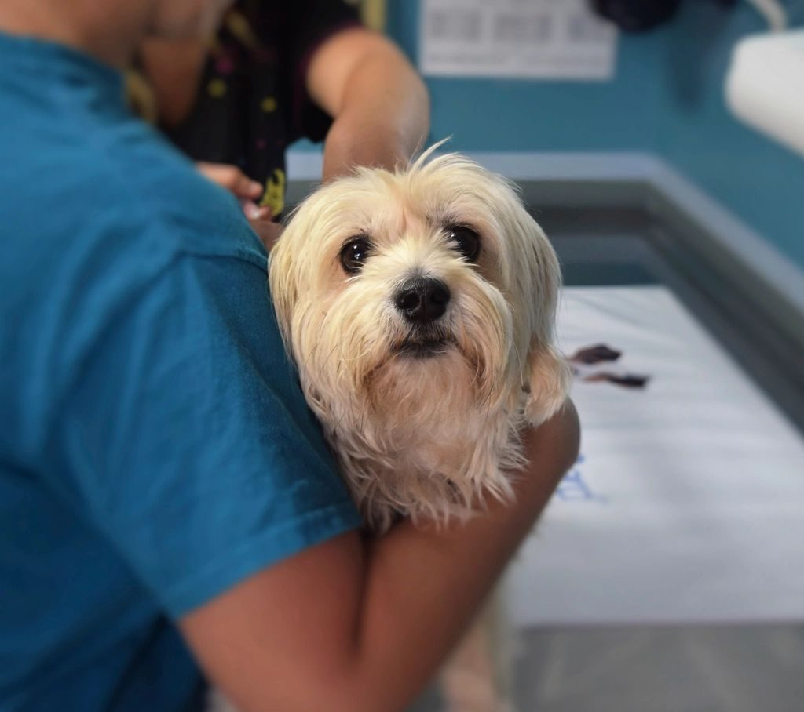

VetLife Veteriner Kliniği Arnavutköy Merkez · Karatay Sokak 11/A
Kedi ve köpekler için muayene, aşı ve tedavi. Tabela şu an açık olup olmadığımızı söylüyor; levhalar nereye başvuracağınızı.
Pazartesi–Cumartesi 09:30–23:00, Pazar 12:00–23:00
Gelmeden önce arayabilir ya da WhatsApp'tan yazabilirsiniz.
Bugünün çalışma saatleri09:30–23:00
- Pzt09:3023:00
- Sal09:3023:00
- Çar09:3023:00
- Per09:3023:00
- Cum09:3023:00
- Cmt09:3023:00
- Paz12:0023:00
Yönlendirme: bugün sizi ne getiriyor?
Nedeni ve dostunuzu seçin. Levha ne yapmanız gerektiğini söylesin: hemen aramak mı, randevu almak mı? Hazır mesajı tek dokunuşla WhatsApp'tan gönderebilirsiniz.
Yönlendirme levhası
Bekleniyor
Bir neden seçin
Ziyaret nedeninizi seçin. Hemen aramanız mı, randevu almanız mı gerektiğini bu levhada göreceksiniz.
Yanınıza alın
Mesaj siz göndermeden hiçbir yere iletilmez. Bu yönlendirme genel bilgidir, tıbbi tavsiye değildir; emin değilseniz veteriner hekiminizi arayın.
Bölüm rehberi
Danışmadaki pano gibi: her hizmetin bir rengi ve levhası var. Rengi aklınızda tutun; sitenin her sayfasında aynı renkle karşınıza çıkar.
- MuayeneBelirtilerin dinlenmesi, genel sağlık değerlendirmesi ve tedavi planı
- AşıYavru ve yetişkin dönem aşıları, kuduz aşısı, karne takibi
- ParazitPire, kene ve iç parazitlere karşı koruma ve kontrol
- KısırlaştırmaÖn görüşmeyle planlanan operasyon ve sonrasında evde bakım
- Bakım ve danışmanlıkBeslenme, kilo, tüy, diş ve yaşlı dost bakımı
- KontrolTedavi ve operasyon sonrası takip ziyaretleri
- Acil durumHayati belirtilerde beklemeden telefon; adım adım ne yapmalı
- Randevu talebiGün ve saat aralığı seçip hazır mesajla yazın
Danışma masası
Nereye yönleneceğinizi bilemediğinizde danışmaya sorar gibi bize sorun: telefonla ya da WhatsApp'tan.

Google kaydında böyle geçiyor
- Veteriner
- Hayvan Hastanesi
- Acil Durum Veterinerlik Hizmeti
- Uzmanlaşmış Klinik
Arnavutköy Merkez'de, Karatay Sokak 11/A'dayız. Hafta içi ve cumartesi 09:30'da, pazar günleri 12:00'de açılıyor, her gün 23:00'e kadar hizmet veriyoruz.
Bu belirtilerde beklemeyin, arayın
Aşağıdakilerden birini görüyorsanız mesaj yazmakla vakit kaybetmeyin. Emin değilseniz de arayın; telefonda size en hızlı yolu söyleyelim.
- Zehirlenme şüphesi
- Nefes darlığı
- Şişkin, sert karın
- Durmayan kanama
- Nöbet, kasılma
- İdrar yapamama
Çalışma saatleri
Pazartesiden cumartesiye sabah 09:30'da, pazar günleri öğlen 12:00'de açılıyoruz. Kapanış her gün 23:00.
| Pazartesi | 09:30–23:00 |
|---|---|
| Salı | 09:30–23:00 |
| Çarşamba | 09:30–23:00 |
| Perşembe | 09:30–23:00 |
| Cuma | 09:30–23:00 |
| Cumartesi | 09:30–23:00 |
| Pazar | 12:00–23:00 |
Pazartesi–Cumartesi 09:30–23:00, Pazar 12:00–23:00
Akşam saatlerinde gelecekseniz yola çıkmadan önce arayıp haber vermeniz bekleme süresini kısaltır. Pazar sabahları kapalıyız; o saatlerde acil bir durum olursa yine de arayın, ulaşamazsanız vakit kaybetmeden açık olan en yakın veteriner kliniğine başvurun.
Kapıdan girmeden: yanınıza alın
Doğru bilgiyle gelinen bir muayene çok daha verimli geçer. Hazırladıklarınızı işaretleyin; liste sizin telefonunuzda kalır.
Sık sorulanlardan
En çok merak edilenler. Tamamı ve arama kutusu Sorular sayfasında.
Randevu almam gerekiyor mu?
Bekleme süresini azaltmak için önceden arayarak ya da WhatsApp'tan yazarak randevu almanızı öneririz. Randevu sayfasındaki araç, talebinizi hazır bir mesaja dönüştürür.
Acil durumda ne yapmalıyım?
Önce telefonla arayın: 0530 366 07 30. Durumu dinleyip size en hızlı yolu söyleyelim. Arayana kadar dostunuza insan ilacı vermeyin, söylenmeden kusturmaya çalışmayın.
Pazar günü açık mısınız?
Evet. Pazar günleri 12:00–23:00 arası açığız; diğer günler 09:30–23:00.
Kuduz aşısı zorunlu mu?
Evet. Türkiye'de sahipli kedi ve köpeklerin kuduz aşısı yasal olarak zorunludur. Dostunuza uygun aşı takvimini hekiminiz belirler; ayrıntılar Bölümler sayfasındaki aşı levhasında.